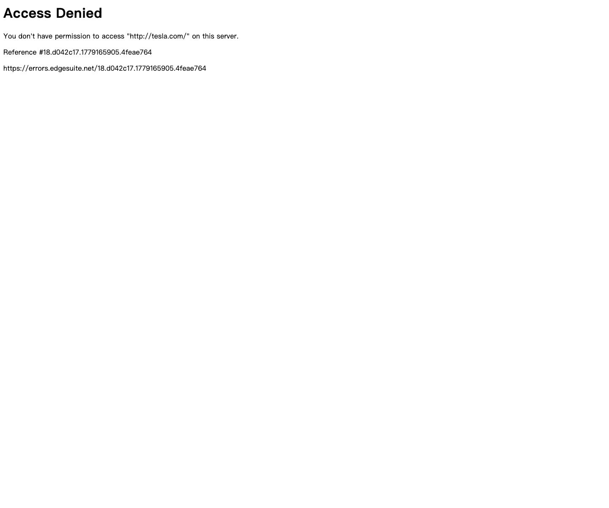

Tesla 主题
Tesla 的 Design.md 主题展示，围绕媒体内容、工业工具、制造工业、B2B 产品组织页面。
Electric automotive. Radical subtraction, full-viewport photography, near-zero UI.
媒体内容工业工具制造工业B2B 产品SaaS 产品开发工具浅色界面效率工具专业工具

来源
- 来源
- getdesign.md
- 镜像
- github:VoltAgent/awesome-design-md
- 网站
- https://tesla.com/
- 详情
- https://getdesign.md/tesla/design-md
色板
#3E6AE1: #3E6AE1#a0a0a0: #a0a0a0#000000: #000000#fbbf24: #fbbf24#8a8a8a: #8a8a8a#0a0a0a: #0a0a0a#e0e0e0: #e0e0e0#ffffff: #ffffff
字体
display: Interbody: Intermono: ui-monospacehints: Inter,ui-monospace
圆角
control: 7pxcard: 7pxpreview: 7pxpill: 9999pxsource: design-md
间距
xxs: 14pxxs: 4pxsm: 40pxmd: 200pxlg: 3pxxl: 16pxxxl: 32pxxxxl: 1024pxsource: design-md
使用建议
建议
- 建议：Let photography dominate every screen — the product IS the design。
- 建议：Use Electric Blue ({#3E6AE1}) exclusively for primary CTAs — never for decorative purposes。
- 建议：Maintain viewport-height sections for major content blocks — one message per screen。
- 建议：Keep typography at weight 400-500 only — no bold, no light, no extremes。
- 建议：Use 4px border-radius for all interactive elements — precision over playfulness。
避免
- 避免：Add shadows to any element — elevation through shadow contradicts the flat, gallery aesthetic。
- 避免：Use more than one chromatic color besides the blue CTA — the palette is intentionally monochrome-plus-one。
- 避免：Apply gradients, patterns, or decorative backgrounds to surfaces — white and photography are the only backgrounds。
- 避免：Use text larger than 40px on the web — the typography is deliberately restrained even at hero scale。
- 避免：Add borders to cards or containers — separation is achieved through spacing, not lines。
查看 DESIGN.md